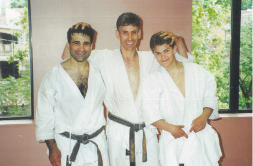

Hamid Chalah
Hamid Chalah started training at the France Shotokan (Paris) with Marc Zerhat, Yves Azema, Alain Gabrielli and Thiery Pierret, and Patrick Masson in Cherbourg (Normandie).
In 1985, Hamid moved to Montreal. At the time he was 1st kyu (highest level brown belt).
Hamid was promoted to shodan (first level black belt) in 1988, nidan (second level black belt) in 1989, and sandan (third level black belt) in 1996.
In 1989, Hamid was a member of Team Canada at the Nisei Week in Los Angeles (home to Shotokan Karate of America).
Ohshima Sensei promoted Hamid to yodan in June 2001.